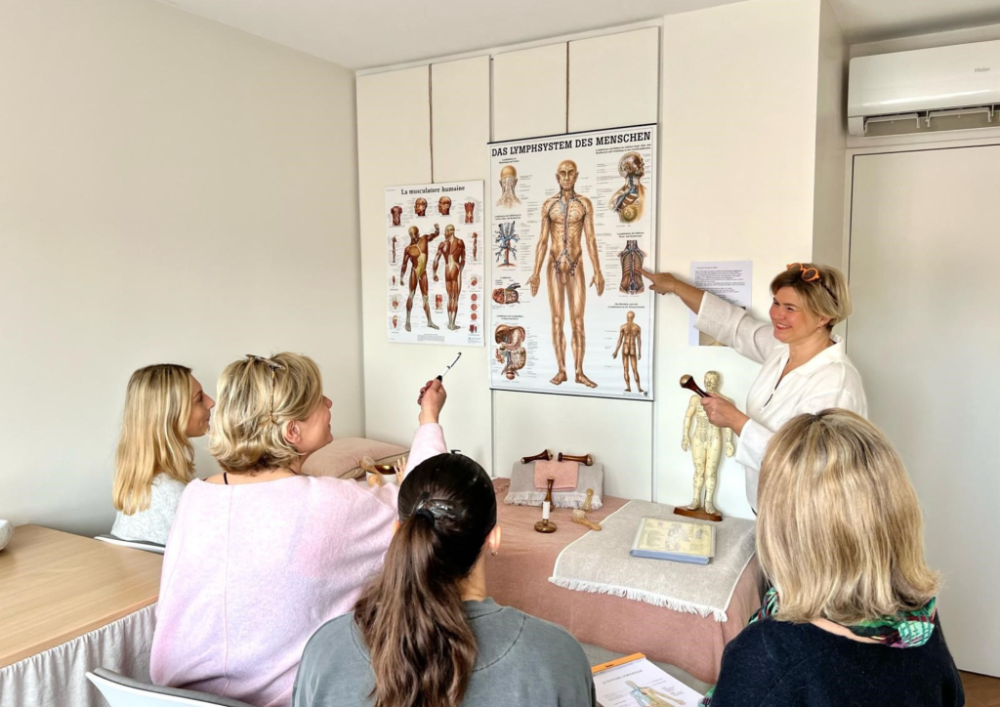

Initiation
Initiation à la méthode
Une première découverte de l’art ancestral indien L’OR ATMA et du Kansa Wand, pour aborder les fondamentaux du soin.
Organisme de Formation

Massage Ancestral Indien
Destiné aux professionnels de l’esthétique, de la coiffure et de la naturopathie.
« Je transmets ma passion, je confie mon expertise. »
La méthode
Organisme de Formation Professionnelle en Massage Bien-Être destiné aux professionnels de l’esthétique, de la coiffure et de la naturopathie.
Le massage ancestral indien, L’OR ATMA s’inspire d’un art traditionnel ancien, revisité dans une approche moderne du bien-être.
Il est pratiqué à l’aide du KANSA WAND, un outil séculaire composé principalement de cuivre reconnu pour ses effets bénéfiques sur la peau, les fascias et les muscles.
Le soin procure une relaxation profonde, à la fois physique et mentale. Une méthode complète permettant d’apporter un soin personnalisé et différenciant.
Mes valeurs : Bienveillance, transmission et richesse dans le partage du savoir-faire et du vivre ensemble.
Notre offre
Toutes les formations peuvent être dispensées sur site, au sein de votre établissement, en fonction du nombre de participants et de la localisation de votre structure. Une demande de devis est nécessaire.

Une première découverte de l’art ancestral indien L’OR ATMA et du Kansa Wand, pour aborder les fondamentaux du soin.

Un massage complet, de la tête aux pieds, inspiré d’un art ancestral indien. Il se concentre sur l’importance du drainage lymphatique pour favoriser l’élimination des toxines.

Travail sur le haut du corps, du visage, décolleté, des bras, du cou, de la nuque et du cuir chevelu.
Engagement qualité
Des engagements visibles et mesurables, au cœur de notre démarche qualité.
Taux de satisfaction
Qualité supports pédagogiques
Informations légales de l’organisme

Parlons ensemble
Si vous souhaitez vous inscrire à une formation ou simplement en savoir plus, contactez-moi.
Je serai ravie d’échanger avec vous et de vous aider à choisir la formation la plus adaptée à vos besoins !